Unit 12
Approximation in Value Space: Neural Networks, Deep Q-Learning and LSTD

4SC000, Q2 2026-2027
Duarte Antunes
Outline
- Approximation architectures for RL
- Deep Q-learning
- Approximation in policy iteration: stochastic gradients, semi-gradients, LSTD
Approximation architectures
Recall the approach
\[u_k=\arg\min_{u_k\in U_k(x_k)}\mathbb{E}\big[g_k(x_k,u_k,w_k)+\tilde J_{k+1}(f_k(x_k,u_k,w_k))\big]\]
where we consider a parameterised approximation of the optimal cost-to-go \(\tilde J_{k+1}(x_{k+1},r_{k+1})\). For simplicity we use \(k\) instead of \(k+1\).
- Architectures: nonlinear, neural networks, linear – e.g.
\[\tilde J_k(x_k,r_k)=\sum_{\ell=1}^{m_k}r_{\ell,k}\phi_{\ell,k}(x_k)=r_k^\intercal\phi_k(x_k)\]
- Training: given a set of \(q\) samples \(\beta_s\) of the cost-to-go (ideally close to the optimal \(J^\star(x_k)\)), find
\[\min_{r_k}\sum_{s=1}^{q}\big(\tilde J_k(x_k^s,r_k)-\beta_s\big)^2\]
for a large number \(q\) of states \(x_k^s\).
Linear architectures
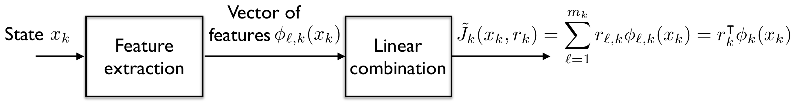
Although it seems simple it can be very powerful, as long as the adequate features are chosen!
For example if
\[\phi_{0,k}(x_k)=1,\quad \phi_{1,k}(x_k)=x_k,\quad \phi_{2,k}(x_k)=x_k^2,\quad \phi_{3,k}(x_k)=x_k^3\ \dots\]
we can theoretically approximate any function \(J^\star(x_k)\) arbitrarily close.
- Major advantage with respect to nonlinear architectures and neural networks is that training is trivial: a closed-form expression after setting the derivative with respect to \(r_k\) of the training cost to zero:
\[r_k=\Big[\sum_{s=1}^{q}\phi_k(x_k^s)\,\phi_k(x_k^s)^\top\Big]^{-1}\sum_{s=1}^{q}\phi_k(x_k^s)\,\beta_s\]
Nonlinear architectures
To perform the required minimisation we must in general pick a numerical method, typically the gradient; since the cost function is in general nonlinear we might get stuck in local minima
\[\min_{r_k}\sum_{s=1}^{q}\big(\tilde J_k(x_k^s,r_k)-\beta_s\big)^2\]
Still, the special structure of the cost function allows one to run an incremental gradient method, where after each simulation we can update the estimate of \(r_k\).
Normal gradient method
\[\hat r_k^{\ell+1}=\hat r_k^{\ell}-\gamma\sum_{s=1}^{q}\frac{\partial}{\partial r_k}\big(\tilde J_k(x_k^s,r_k)-\beta_s\big)^2\Big|_{r_k=\hat r_k^{\ell}}\]
Incremental gradient method
\[\hat r_k^{\ell+1}=\hat r_k^{\ell}-\gamma\frac{\partial}{\partial r_k}\big(\tilde J_k(x_k^s,r_k)-\beta_s\big)^2\Big|_{r_k=\hat r_k^{\ell}}\]
For example, neural networks (a special case of nonlinear architectures, discussed next) run incremental gradient methods (backpropagation algorithms). This is further discussed in the sequel.
Neural networks
Typical structure
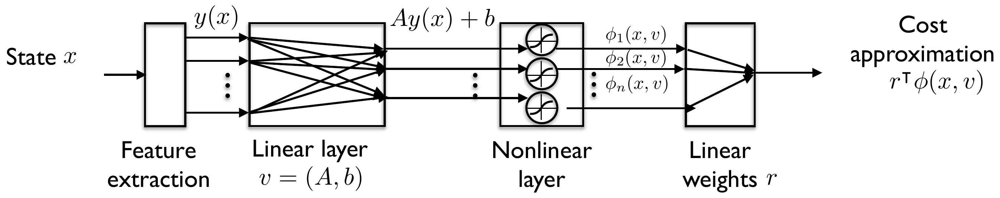
Analytically: \(\ \tilde J(x,v,r)=\sum_{\ell=1}^{m}r_\ell\,\sigma\big((Ay(x)+b)_\ell\big)\), the subscript \(\ell\) denoting component \(\ell\).
Examples of functions \(\sigma\) in the nonlinear layer
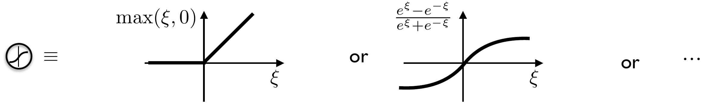
This structure is ‘easy’ to train (in contrast with multi-layer deep neural networks) if we choose the right features – in turn one must ‘handcraft’ the features!
Universal approximator
The structure of the previous slide is also a universal approximator, in the sense that it can approximate arbitrarily closely any continuous function \(J:\mathbb{R}^n\to\mathbb{R}\).
Why? Intuition for \(J:\mathbb{R}\to\mathbb{R}\): it can approximate a pulse with the following structure
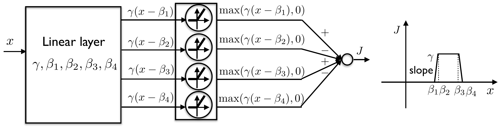
And a continuous function can be approximated by a sum of pulses.
Deep neural network
Several linear and nonlinear layers between the input and output
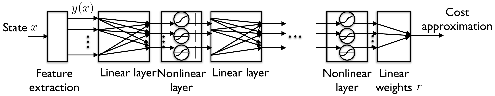
- Deep neural networks are responsible for tremendous recent achievements in the area of computer vision, and much of this success is expected in other fields in the future.
- Much harder to train, much more insight needed to design the structure.
- However, in some cases some of the layers learn how to extract features from the input of previous layers, releasing the designer from having to ‘handcraft’ the features.
- To know more: Deep learning, Ian Goodfellow, Yoshua Bengio, Aaron Courville, MIT Press, 2016.
Goal of least-squares regression
A regressor maps a state \(x\) to an estimate \(\hat J\), where the pair \((x,J)\) follows a joint probability distribution. The regression problem is
\[\min_{\hat J}\ \mathbb{E}\big[(J(x)-\hat J)^2\big]\]
Optimal solution \(\quad\hat J=\mathbb{E}[J\mid x]\)
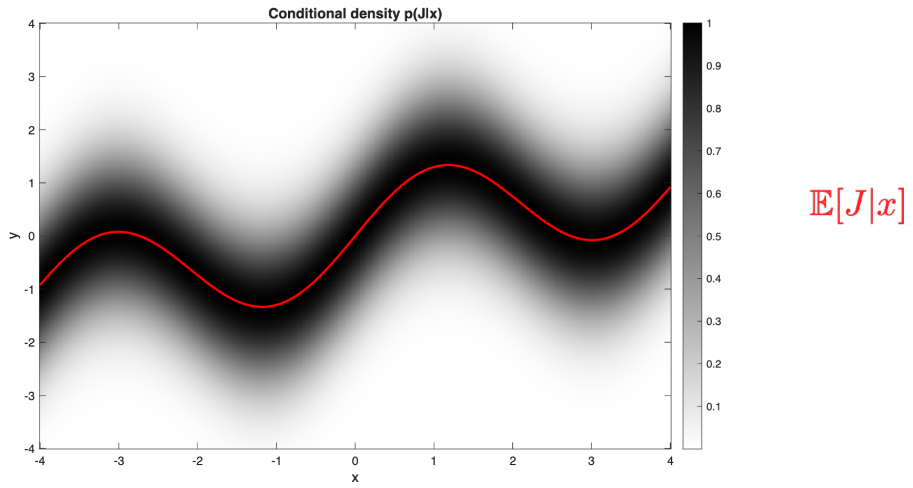
Neural networks with quadratic loss
A neural network with parameters \(\theta\) maps \(x\) to \(\hat J(x;\theta)\). Based on samples \((x_i,J_i)\) of the joint distribution \((x,J)\), find parameters \(\theta\) to solve
\[\min_{\theta}\ \frac{1}{N}\sum_{i=1}^{N}\big(J_i-\hat J(x_i;\theta)\big)^2\]
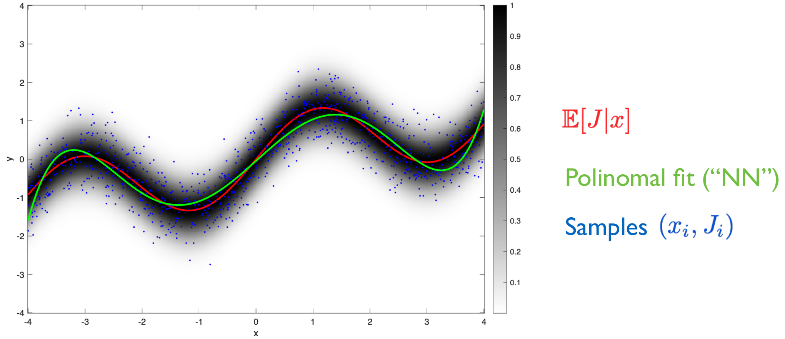
As the network becomes more expressive and more samples are acquired, the best network approximates \(\mathbb{E}[J\mid x]\).
Neural networks with quadratic loss: a real network
Similar example but with an actual neural network – two hidden layers, linear + ReLU, \(64\) units, \(400\) training epochs – can be found here, and generates the output
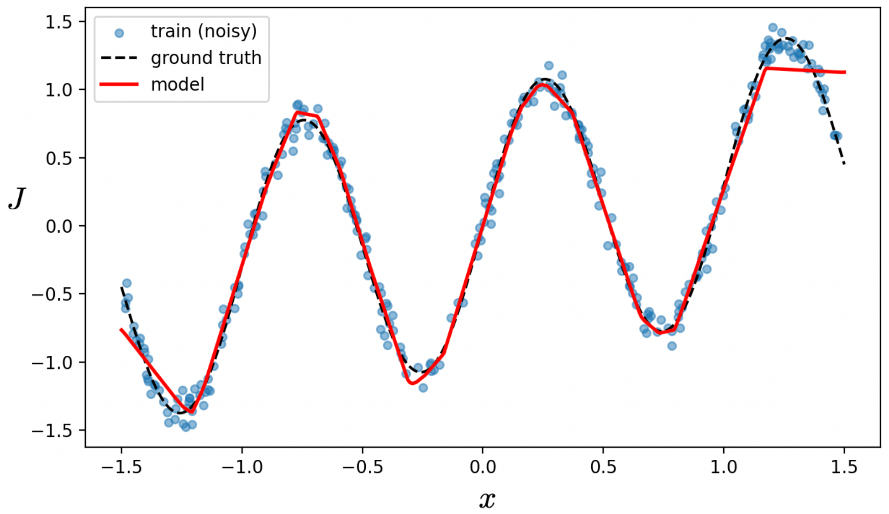
Stochastic gradient
Following a gradient descent method would be very expensive when \(N\) is very large
\[\min_{\theta}\ \frac{1}{N}\sum_{i=1}^{N}\big(J_i-\hat J(x_i;\theta)\big)^2\]
Thus the training of neural networks uses the stochastic gradient method, where the full gradient is replaced by the gradient of one squared sample error
\[\theta_{k+1}=\theta_k-\gamma_k\nabla_\theta\big(J_i-\hat J(x_i;\theta)\big)^2\]
This simple gradient can be computed efficiently for neural networks with the back propagation algorithm.
The stochastic gradient method converges under mild assumptions.
Another great advantage is that the randomness allows stochastic gradient to avoid local minima.
Example
Compare the normal gradient method with stochastic gradient on the same regression example of the previous slide. The example can be found here.
| Time | Loss | Training epochs | |
|---|---|---|---|
| Stochastic gradient | \(0.871\) s | \(0.013107\) | \(400\) |
| Full gradient | \(16.950\) s | \(0.011145\) | \(120\,000\) |
Outline
- Approximation architectures for RL
- Deep Q-learning
- Approximation in policy iteration: stochastic gradients, semi-gradients, LSTD
Discussion
- To extend Q-learning to continuous spaces (but still considering discrete input spaces) we can simply approximate the Q-factors with a neural network.
- This fits very well with incremental updates of the weights of the neural network (back propagation): each time we receive a cost we take one gradient step!
\[\hat r_{t+1}=\hat r_t-\gamma\frac{\partial}{\partial r}\big(\hat Q_t(x_t,u_t,r)-\beta^t\big)^2\Big|_{r=\hat r_t}\]
\[\beta^t=g(x_t,u_t)+\min_{v\in U(x_{t+1})}\hat Q_t(x_{t+1},v,\hat r_t)\]
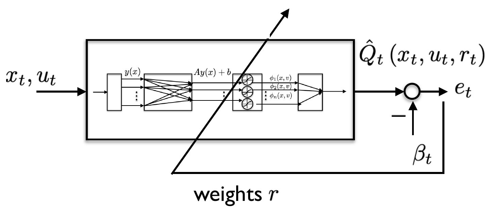
- This is then a natural extension of the tabular (discrete spaces) case rewritten as follows
\[Q_{t+1}(x_t,u_t)=Q_t(x_t,u_t)-\gamma^t\big(Q_t(x_t,u_t)-\beta^t\big), \qquad \beta^t=g(x_t,u_t)+\min_{v\in U(x_{t+1})}Q_t(x_{t+1},v)\]
- However, the algorithm known as deep Q-learning, discussed now, has a few more features.
Deep Q-learning
Main ideas
- Approximate the Q-function with a neural network, to handle large or continuous state spaces
\[Q^\star(x_k,u_k)\approx\hat Q(x_k,u_k,\theta)\]
- Learn the parameters \(\theta\) by using the error to train a neural network as just discussed
\[L(\theta)=\Big(g(x_k,u_k)+\alpha\min_{u}\hat Q(x_{k+1},u,\theta)-\hat Q(x_k,u_k,\theta)\Big)^2\]
Special features
Experience replay: stores transitions \((x_t,u_t,g(x_t,u_t),x_{t+1})\) in a replay buffer. Sampling random minibatches breaks correlations and stabilises learning.
Target network: a separate, slowly updated network. Prevents oscillations and divergence.
Deep Q-learning algorithm
Algorithm
Initialize replay buffer \(\mathcal{D}\) to capacity \(N\), action-value network \(Q(x,u,\theta)\) and target network \(Q(x,u,\bar\theta)\) with random weights \(\theta=\bar\theta\).
For each episode:
Initialize state \(x_0\)
For each time step \(k\):
- Select \(u_k=\arg\min_u Q(x_k,u,\theta)\) with probability \(1-\epsilon\), otherwise a random action.
- Store transition \((x_k,u_k,g(x_k,u_k),x_{k+1})\) in the replay buffer \(\mathcal{D}\).
- Sample a minibatch of \(M\) transitions \((x_k,u_k,g(x_k,u_k),x_{k+1})\) from \(\mathcal{D}\).
- Compute the target for each sample:
\[z_k=\begin{cases}g(x_k,u_k)+g(x_{k+1},\cdot), & \text{if } x_{k+1} \text{ is a terminal state}\\[4pt] g(x_k,u_k)+\alpha\min_u Q(x_{k+1},u;\bar\theta), & \text{otherwise}\end{cases}\]
- Perform a gradient descent step on the loss (a back propagation step in the neural network).
- Every \(L\) steps, update the target network: \(\bar\theta=\theta\).
Example: lunar lander
Lunar lander. Four discrete actions are available: \(0\) do nothing, \(1\) fire left orientation engine, \(2\) fire main engine, \(3\) fire right orientation engine.
The dynamics are a \(6\)-dimensional vector: coordinates \((x,y,\theta)\) and velocities \((v_x,v_y,\dot\theta)\); the state has two additional booleans representing whether each leg is in contact with the ground.
Cumulative reward. For each step, the reward
- is increased/decreased the closer/further the lander is to the landing pad;
- is increased/decreased the slower/faster the lander is moving;
- is decreased the more the lander is tilted (angle not horizontal);
- is increased by \(10\) points for each leg in contact with the ground;
- is decreased by \(0.03\) points each frame a side engine is firing;
- is decreased by \(0.3\) points each frame the main engine is firing.
The episode receives an additional reward of \(-100\) or \(+100\) points for crashing or landing safely, respectively.
An episode is considered a solution if it scores at least \(200\) points. The lander starts at the top centre of the viewport with a random initial force applied to its centre of mass. The episode finishes if the lander crashes, leaves the viewport, or is not awake.
Example
Deep Q-learning with a three-layer neural network to estimate the value function – linear + ReLU, linear + ReLU, linear + ReLU. The example can be found here, with an animation.

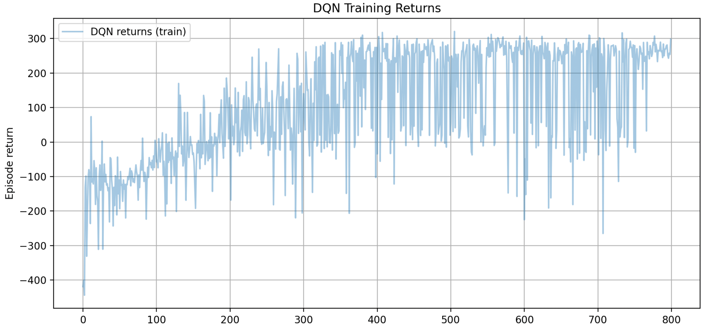
Outline
- Approximation architectures for RL
- Deep Q-learning
- Approximation in policy iteration: stochastic gradients, semi-gradients, LSTD
Approximation in simulation-based PI
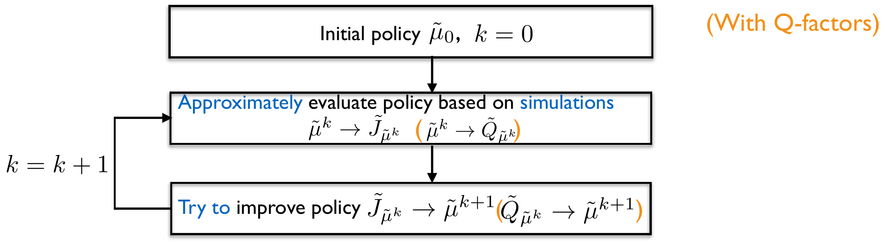
For problems with discrete states, the only source of approximation comes from the use of (Monte-Carlo) simulation. However, for stage decision problems we need to circumvent the curse of dimensionality by considering parameterizations
\[\tilde J_{\tilde\mu^k}(r_k) \qquad \big(\tilde Q_{\tilde\mu^k}(r_k)\big)\]
Moreover, to solve the policy improvement step we need to solve
\[u_k=\arg\min_{u_k\in U_k(x_k)}\mathbb{E}\big[g_k(x_k,u_k)+\tilde J_{\mu^{k+1}}(x_{k+1})\big] \qquad \big(u_k=\arg\min_{u_k\in U_k(x_k)}\tilde Q_{\mu^k}(x_k,u_k)\big)\]
where approximate methods such as the gradient method might be needed – see later, actor-critic methods. For now we focus on approximate policy iteration.
Intermezzo: stochastic gradient methods
For problems that involve taking the gradient of an expected value of a cost function over some stochastic variable \(w\) (or the expected value of a gradient of a cost)
\[\theta_{k+1}=\theta_k-\gamma\nabla_\theta\mathbb{E}_w\big[V(\theta,w)\big]\]
Stochastic gradient methods simply replace the expected value by a realization of \(w\)
\[\theta_{k+1}=\theta_k-\gamma\nabla_\theta V(\theta,w)\]
When \(V\) is convex and under the usual assumptions on the parameter \(\gamma\) – it needs to be time-varying and decaying – this method converges to the optimal value of the parameter.
Stochastic gradient with Monte-Carlo
Instead of keeping a table and updating it (as in tabular TD or Monte-Carlo), we rather update the parameters of a neural network approximating the cost-to-go / value function:
\[\theta_{k+1}=\theta_k-\gamma_k\nabla_\theta\big(\underbrace{J_i}_{\text{one Monte-Carlo return started in state } x_i}-\ \hat J(x_i;\theta)\big)^2\]
where the network maps \(x\) to \(\hat J(x;\theta)\). This is nothing more than stochastic gradient.
The cost function leading to this stochastic gradient method can be written as
\[\min_{\theta}\ \mathbb{E}\big[(J(x)-\hat J(x;\theta))^2\big]=\sum_{x}\mu(x)\big(J(x)-\hat J(x;\theta)\big)^2\]
where \(\mu(x)\) is the asymptotic probability of state \(x\) – the ratio of time spent in \(x\).
Semi-gradient with TD
The semi-gradient method is similar, but the sampled cost of Monte-Carlo is replaced by the usual estimate of TD,
\[J_i \ \longrightarrow\ g(x_k,\mu(x_k))+\hat J(x_{k+1},\theta),\]
substituted into
\[\theta_{k+1}=\theta_k-\gamma_k\nabla_\theta\big(J_i-\hat J(x_i;\theta)\big)^2 .\]
This is not a stochastic gradient method, since we do not take the gradient of the error: we first take the gradient with respect to \(\hat J(x_k,\theta)\) and only then replace the TD return. Written out, the update is
\[\theta_{k+1}=\theta_k+\gamma_k\Big(g(x_k,\mu(x_k))+\alpha\hat J(x_{k+1};\theta_k)-\hat J(x_k;\theta_k)\Big)\nabla_\theta\hat J(x_k;\theta_k),\]
and the point is that \(\theta_k\) appears in the target as well, but is not differentiated.
Semi-gradient TD with linear features
When \(\hat J(x,\theta)=\theta^\intercal\phi(x)\) with \(\phi:\mathbb{R}^n\to\mathbb{R}^m\), \(m\ll n\), we get
\[\theta_{k+1}=\theta_k-\gamma_k\nabla_\theta\big(J_i-\hat J(x_i;\theta)\big)^2 \quad\longrightarrow\quad \theta_{k+1}=\theta_k+\gamma_k\big(J_i-\theta_k^\intercal\phi(x_k)\big)\phi(x_k)\]
This is a linear iteration for the parameters, which can be shown to converge to
\[\theta^\star=\big(\tilde\Phi^\top\tilde\Phi-\alpha\tilde\Phi^\top\tilde\Phi'\big)^{-1}\big(\tilde\Phi^\top G\big)\]
where
\[\begin{aligned} \tilde\Phi&=\big[\phi(x_0),\phi(x_1),\dots,\phi(x_{T-1})\big]^\top,\\ \tilde\Phi'&=\big[\phi(x_1),\phi(x_2),\dots,\phi(x_T)\big]^\top,\\ G&=\big[g(x_0,u_0),g(x_1,u_1),\dots,g(x_{T-1},u_{T-1})\big]^\top,\end{aligned}\]
and \(T\) is the length of the collected data.
LSTD – batch linear TD
- Alternatively, we can try to minimise the projected Bellman equation, where the right-hand side of \(J_\mu=TJ_\mu\) is first projected into the feature space \(\mathcal{J}=\{\Phi\omega\mid\omega\in\mathbb{R}^m\}\), with
\[\Phi=\begin{bmatrix}\phi_1(1)&\phi_2(1)&\dots&\phi_m(1)\\ \phi_1(2)&\phi_2(2)&\dots&\phi_m(2)\\ \dots&\dots&\dots&\dots\\ \phi_1(n)&\phi_2(n)&\dots&\phi_m(n)\end{bmatrix}\]
- This leads to solving
\[\tilde J_\mu=\arg\min_{J\in\mathcal{J}}\|J-\Pi TJ\|^2, \qquad \Pi TJ=\arg\min_{h\in\mathcal{J}}\|TJ-h\|^2\]
- A sampled version of this is the Least Squares Temporal Difference (LSTD) method, where the weights are obtained from solving
\[\theta=\arg\min_{\bar\theta\in\mathbb{R}^m}\sum_{k=1}^{S}\big\|g(x_k,\mu(x_k))+\phi(x_{k+1})^\top\bar\omega-\phi(x_k)^\top\bar\theta\big\|^2, \qquad \omega=\arg\min_{\bar\omega}\sum_{k=1}^{S}\big\|\phi(x_k)^\top\bar\omega-\phi(x_k)^\top\theta\big\|^2\]
LSTD – the TD fixed point
- Solving these equations leads to the same answer as the semi-gradient iteration, called the TD fixed point:
\[\theta^\star=\big(\tilde\Phi^\top\tilde\Phi-\alpha\tilde\Phi^\top\tilde\Phi'\big)^{-1}\big(\tilde\Phi^\top G\big)\]
\[\begin{aligned} \tilde\Phi&=\big[\phi(x_0),\phi(x_1),\dots,\phi(x_{T-1})\big]^\top,\\ \tilde\Phi'&=\big[\phi(x_1),\phi(x_2),\dots,\phi(x_T)\big]^\top,\\ G&=\big[g(x_0,u_0),g(x_1,u_1),\dots,g(x_{T-1},u_{T-1})\big]^\top\end{aligned}\]
- The incremental method and the batch method therefore agree: one reaches the fixed point gradually from data as it arrives, the other computes it in one solve from a stored batch.
SARSA with function approximation
In the same way we went from Q-learning to Q-learning with function approximation, we can go from SARSA to SARSA with function approximation.
Algorithm
Initialize the parameters \(\theta\) of \(Q(x,u,\theta)\).
For each episode:
Initialize state \(x_0\). Select \(u_0=\arg\min_u Q(x_0,u,\theta)\) with probability \(1-\epsilon\), otherwise a random action.
For each time step \(k\):
- Execute \(u_k\), observe the cost and the next state \(x_{k+1}\).
- Select \(u_{k+1}=\arg\min_u Q(x_{k+1},u,\theta)\) with probability \(1-\epsilon\), otherwise a random action.
- Compute the target for each sample:
\[z_k=\begin{cases}g(x_k,u_k)+g(x_{k+1},\cdot), & \text{if } x_{k+1} \text{ is a terminal state}\\[4pt] g(x_k,u_k)+\alpha\,Q(x_{k+1},u_{k+1};\theta), & \text{otherwise}\end{cases}\]
- Perform a gradient descent step on the loss (a back propagation step in the neural network):
\[\theta\leftarrow\theta+\gamma\big(g(x_k,u_k)+\alpha\,Q(x_{k+1},u_{k+1};\theta)-Q(x_k,u_k;\theta)\big)\nabla_\theta Q(x_k,u_k;\theta)\]
Example
For the lunar lander example, the results are similar to deep Q-learning – see here.
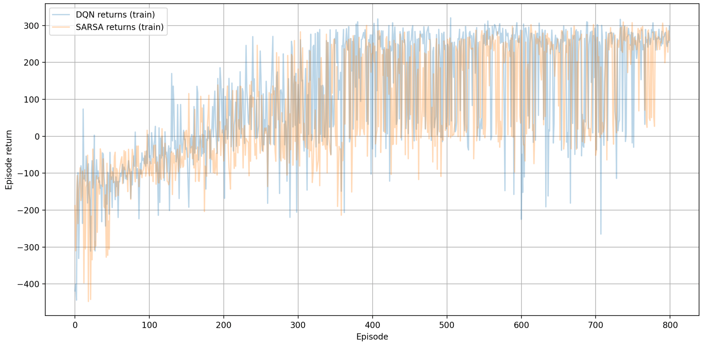
Concluding remarks
To summarize:
- The tabular methods of Units 10 and 11 need one entry per state, or per state-action pair. This unit replaces the table by a parameterised approximation \(\tilde J(x,r)\) or \(\tilde Q(x,u,r)\), which is what makes continuous or very large state spaces tractable at all – it is the curse of dimensionality, finally addressed.
- Linear architectures \(r^\intercal\phi(x)\) are powerful if the features are right, and their great advantage is that training is a single least-squares solve. The price is that somebody has to choose the features.
- Neural networks are universal approximators: a linear layer followed by a nonlinear layer can build a pulse, and pulses can build any continuous function. Deep networks learn the features themselves, at the cost of being much harder to train.
- Training is regression. The target of the regression is \(\mathbb{E}[J\mid x]\), and stochastic gradient – one sample at a time, with back propagation computing the gradient – is what makes it affordable. In the example of this lecture it is twenty times faster than the full gradient for an equivalent loss.
- Deep Q-learning is Q-learning with the table replaced by a network, plus two devices that make it work in practice: an experience replay buffer, which breaks the correlation between consecutive samples, and a slowly updated target network, which stops the target moving as fast as the estimate.
- For policy evaluation with an approximation, Monte-Carlo gives a genuine stochastic gradient, while TD gives a semi-gradient: the target contains the parameters too, and is deliberately not differentiated. This is not a gradient method on any cost, which is why its convergence has to be argued separately.
- With linear features the semi-gradient iteration is linear and converges to the TD fixed point. LSTD computes that same point directly from a batch of data, by solving the projected Bellman equation in a least-squares sense. Same answer, incrementally or in one solve.
4SC000 – Optimal Control and Reinforcement Learning